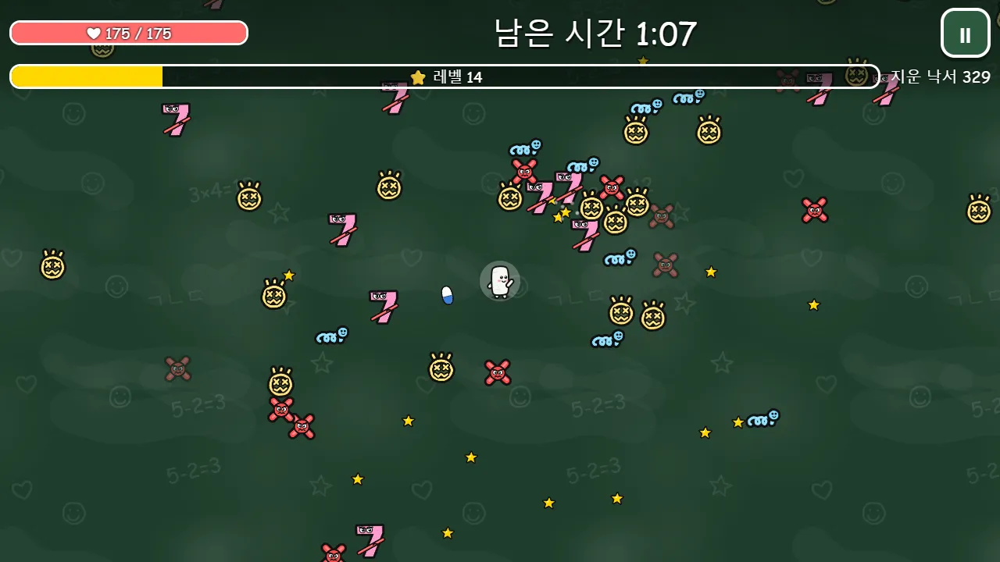
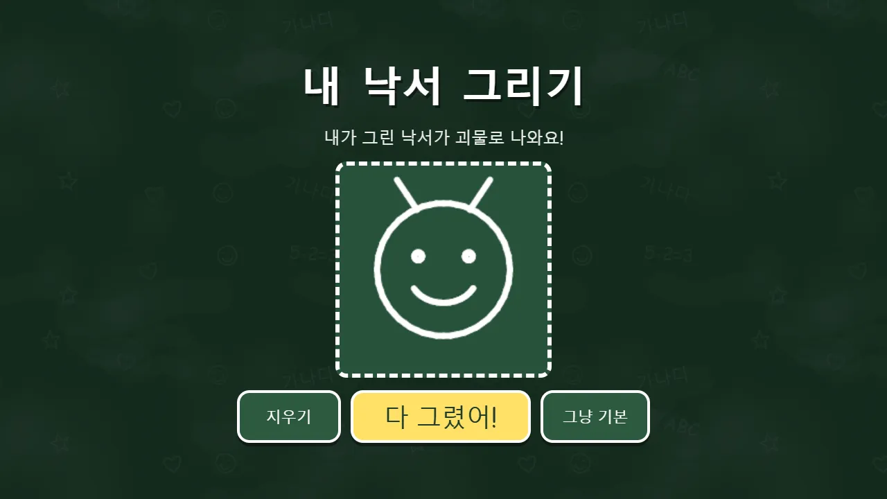
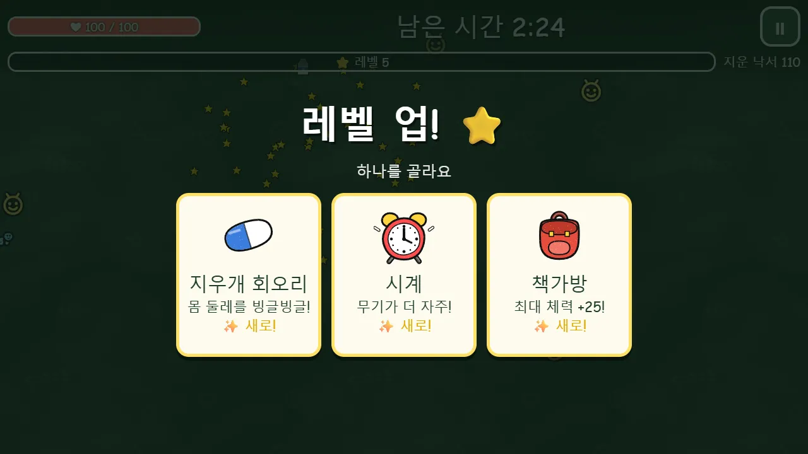
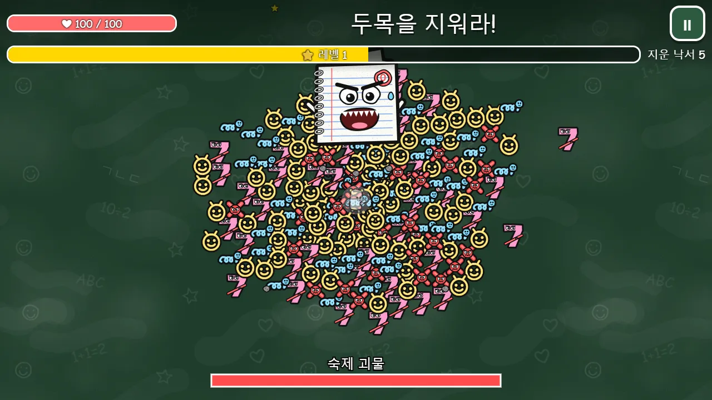

✈️ 액션 게임 · 무료 · 설치 없음
분필 대소동
“내가 그린 낙서가 괴물이 되어 몰려온다!”
- 한 판 4분 남짓
- 내 낙서가 괴물로
- 무기 4가지 · 강화 3가지
- 최고 기록 · 성적표 그림 저장
회원가입 없이 누르면 바로 시작돼요
어떤 게임인가요?
아무도 없는 칠판 위, 누군가 그려 둔 낙서들이 꿈틀꿈틀 살아났어요. 동그란 낙서 얼굴, 꼬불꼬불 지렁이 글씨, 화난 빨간 X, 틀린 숫자까지 몰려와요. 분필 한 자루 「분필이」가 칠판을 지켜야 해요.
움직이기만 하면 공격은 저절로 해요. 낙서를 지우면 나오는 별 스티커를 모아 레벨을 올리고, 분필 던지기·지우개 회오리·자 휘두르기·포스트잇 폭탄 중에서 골라 키워요. 2분에는 종이비행기 대장, 3분에는 낙서 떼 습격이 기다려요.
시작하기 전에 「내 낙서 그리기」로 칠판에 그림을 그리면, 그 그림이 노란 낙서 괴물이 되어 나와요. 4분을 버티면 마지막 두목이 등장해요. 두목 이름도 「받아쓰기 대마왕」, 「구구단 마왕」처럼 골라서 붙일 수 있어요.
이렇게 해요
- STEP 1
낙서를 그려요 (골라서)
「내 낙서 그리기」를 누르고 칸에 손가락이나 마우스로 그려요. 「다 그렸어!」를 누르면 그 그림이 괴물 얼굴이 돼요. 그리지 않아도 바로 시작할 수 있어요.
- STEP 2
움직이며 피해요
화면 아무 데나 누르고 끌면 그 방향으로 움직여요. 컴퓨터에서는 WASD나 방향키로 움직여요. 공격은 저절로 해요.
- STEP 3
별을 모아 강해져요
별 스티커를 모아 레벨이 오르면 카드 세 장 중 하나를 골라요. 4분을 버티고 마지막 두목을 지우면 이겨요.



🌟 이런 것도 있어요
- 무기 네 가지와 강화 세 가지가 각각 3단계까지 자라요. 고르는 순서에 따라 판마다 싸우는 모습이 달라져요.
- 괴물은 색으로 구분돼요. 빨간 X는 잠깐 깜빡이다 돌진하고, 분홍 숫자는 지우면 작은 숫자 둘로 나뉘어요.
- 📷 성적표 저장: 버틴 시간, 지운 낙서 수, 내가 그린 낙서가 담긴 그림을 내려받아 친구에게 자랑할 수 있어요.
- ⏸ 단추나 Esc·P 키로 언제든 멈출 수 있고, 다른 창으로 넘어가면 저절로 멈춰요.
때리고 부수는 대신 「지우는」 게임이에요. 낙서는 분필 가루가 되어 사라져요.
이런 분께 추천해요
- 짧은 시간에 한 판 시원하게 하고 싶은 분
- 내가 그린 그림이 게임에 나오는 걸 보고 싶은 분
- 친구나 가족과 버틴 시간을 겨뤄 보고 싶은 분
처음에는 분필 던지기와 지우개 회오리를 먼저 키워 보세요. 괴물에 둘러싸이면 멈춰 서지 말고 빈 쪽으로 크게 돌며 별을 모으면 오래 버틸 수 있어요.
📱 어떤 기기에서 하면 좋을까요?
- 가장 좋아요태블릿 가로·세로 모두
화면을 누르고 끄는 조작이 편하고, 칠판이 넓게 보여요. 낙서 그리기도 손가락으로 쉬워요.
- 가장 좋아요컴퓨터·노트북 키보드·마우스
WASD나 방향키로 움직이고, 마우스로 카드를 골라요. 큰 화면일수록 칠판이 넓게 보여요.
- 좋아요휴대폰 가로·세로 모두
한 손으로 끌어서 할 수 있어요. 화면이 작은 만큼 괴물이 조금 더 가까이에서 나타나요.
오른쪽 위 메뉴(⋮ 또는 ···)에서 「다른 브라우저로 열기」를 눌러 크롬이나 사파리로 열어 주세요. 앱 안에서는 전체 화면이 안 되고 저장이 풀릴 수 있어요.
🍎 아이폰·아이패드에서는
- ① 사파리로 열기
카카오톡이나 네이버 앱 안에서는 화면이 좁아요. 「다른 브라우저로 열기」나 사파리로 열어 주세요.
- ② 화면을 넓게 쓰기
이 게임에는 전체 화면 단추가 없어요. 주소창 왼쪽의 가가(aA) 버튼 → 「도구 막대 가리기」를 누르면 화면을 더 넓게 쓸 수 있어요.
- ③ 소리
무음 스위치가 켜져 있으면 소리가 나지 않아요. 게임 안에는 소리 끄기 단추가 없으니 기기 음량으로 조절해 주세요.
🤖 갤럭시 등 안드로이드에서는
크롬이나 삼성 인터넷으로 열어 주세요. 전체 화면 단추는 없어서, 주소창이 보이는 채로 해요. 소리는 기기 음량으로 조절해요.
▶ 바로 해 보기
설치도, 회원가입도 필요 없어요.
분필 대소동 시작하기game.edoori.co.kr/chalk/